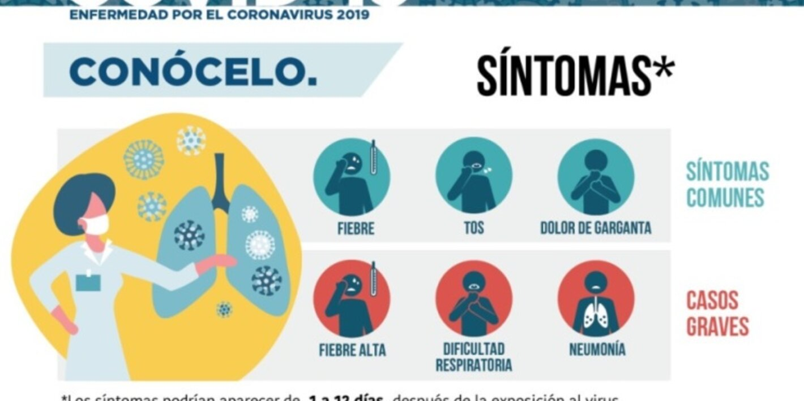
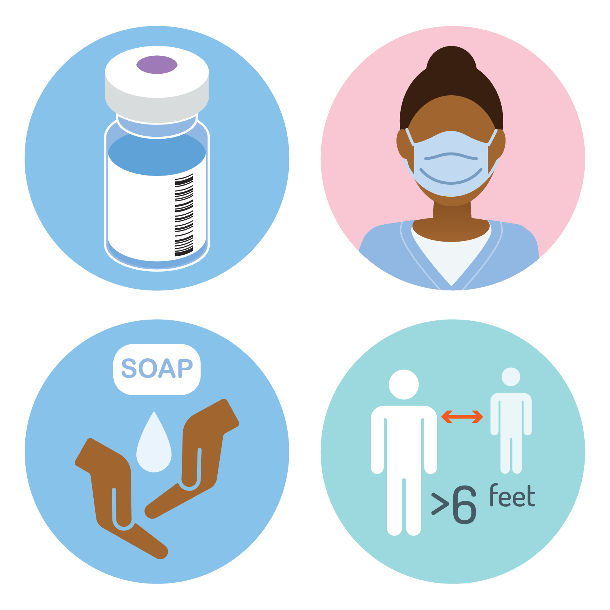
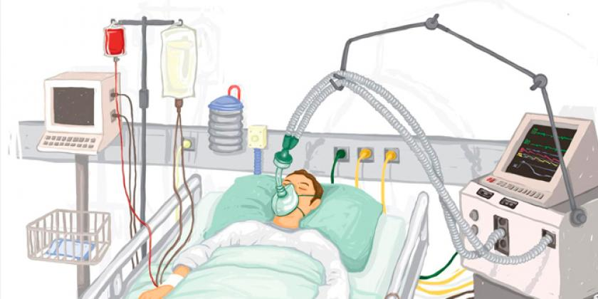

Estadisticas en Bolivia
Epidemiología del brote de coronavirus en Bolivia
| Departamentos |
Casos Confirmados |
Pacientes recuperados |
Decesos confirmados |
Casos activos |
| 1° |
Santa Cruz |
110.521 |
98.081 |
5.649 |
6.791 |
| 2° |
La Paz |
68.443 |
55.829 |
1.977 |
10.637 |
| 3° |
Cochabamba |
31.375 |
26.116 |
1.742 |
3.517 |
| 4° |
Tarija |
25.367 |
19.965 |
653 |
4.749 |
| 5° |
Potosí |
15.077 |
13.928 |
458 |
691 |
| 6° |
Chuquisaca |
17.910 |
11.730 |
790 |
5.390 |
| 7° |
Beni |
15.346 |
9.386 |
659 |
5.301 |
| 8° |
Oruro |
14.169 |
12.361 |
742 |
1.066 |
| 9° |
Pando |
5.524 |
2.984 |
281 |
2.259 |
| TOTAL |
303.732 |
250.380 |
12.951 |
40.401 |
Tasas en función a la enfermedad
40.401
Activos
4.26%
TASA DE LETALIDAD
82.43%
TASA DE RECUPERACIÓN
Síntomas

La COVID-19 afecta de distintas maneras en funciín de cada persona. La mayoría de
las
personas que se
contagian presentan síntomas de intensidad leve o moderada, y se recuperan sin necesidad
de
hospitalización.
- Los síntomas más habituales son los siguientes:
-
- Fiebre
-
- Tos seca
-
- Cansancio
- Otros síntomas menos comunes son los siguientes:
-
-
Molestias y dolores
- Dolor de garganta
- Diarrea
- Conjuntivitis
- Dolor de cabeza
- Pérdida del sentido del olfato o del gusto
- Erupciones cutáneas o pérdida del color en los dedos de las manos o de los pies
Prevención

Toma las precauciones adecuadas e infórmate bien para protegerte y cuidar de quienes te rodean.
Sigue las recomendaciones de los organismos de salud pública de tu zona.
Para evitar la propagación de la COVID-19:
-
- Lávate las manos con frecuencia. Usa agua y jabón o un desinfectante de manos a base de
alcohol.
- Mantén una distancia de seguridad con personas que tosan o estornuden.
- Utiliza mascarilla cuando no sea posible mantener el distanciamiento físico.
- No te toques los ojos, la nariz ni la boca.
- Cuando tosas o estornudes, cúbrete la nariz y la boca con el codo flexionado o con un
pañuelo.
- Si no te encuentras bien, quédate en casa.
- En caso de que tengas fiebre, tos o dificptad para respirar, busca atención médica.
Llama por teléfono antes de acudir a cualquier proveedor de servicios sanitarios para que te
dirijan al centro médico adecuado. De esta forma, te protegerás a ti y evitarás la propagación
de virus y otras infecciones.
Mascarillas
Las mascarillas pueden ayudar a prevenir que las personas que las llevan propaguen el virus y lo
contagien a otras personas. Sin embargo, no protegen frente a la COVID-19 por sí solas, sino que
deben combinarse con el distanciamiento físico y la higiene de manos. Sigue las recomendaciones
de los organismos de salud pública de tu zona.
Tratamiento

Cuidado personal
Si se siente enfermo debe descansar, beber mucho líquido y comer alimentos nutritivos.
Permanezca en una habitación separada de los demás miembros de la familia y utilice un baño
exclusivamente para usted si es posible. Limpie y desinfecte frecuentemente las superficies que
toque.
Todas las personas deben mantener un estilo de vida saludable en casa. Lleve una dieta
saludable, duerma, manténgase activo y establezca contacto social con los seres queridos a
través del teléfono o internet. Los niños necesitan dosis adicionales de cariño y atención de
los adptos durante los momentos difíciles. Mantenga rutinas y horarios regpares en la medida
de lo posible.
Es normal sentirse triste, estresado o confundido durante una crisis. Hablar con personas en las
que confíe, como amigos y familiares, le puede ayudar. Si se siente abrumado, hable con un
trabajador de la salud o un consejero.
Tratamientos Médicos
Si tiene síntomas leves y, por lo demás, está sano, aíslese y póngase en contacto con su
proveedor de atención médica o con una línea de información sobre la COVID‑19 para recibir
asesoramiento.
Vacunas

El Plan nacional de vacunación para la introducción de la vacuna anti-COVID-19 elaborado por el
Ministerio de Salud y Deportes, a través del Programa Nacional Ampliado de Imnunización (PAI)
fue diseñado según las recomendaciones internacionales y requisitos para acceder al Mecanismo
COVAX. Por tanto, se trata de un plan que ha recibido la aprobación satisfactoria de los
principales expertos internacionales de COVAX.
La evaluación del plan boliviano de inmunización con la vacuna contra la COVID-19 fue clave para
que el país fuera uno de los cuatro países elegidos para recibir las primeras vacunas COVAX. El
plan establece como principios una vacunación universal, gratuita y voluntaria contra la
COVID-19 de todos los bolivianos de 18 años y más, con un calendario definido por edades.
Desde que se reportó el primer caso de COVID-19 en territorio, en marzo de 2020, Bolivia
registró 262,941 casos acumpados y 12.028 fallecimientos como consecuencia del virus
SARS-CoV-2.
“Debido a que la COVID-19 es una de las causas principales de enfermedad y muerte, por la
trascendencia en las familias y en la comunidad, su atención se ha constituido en una prioridad
de las políticas de salud de nuestro país”, reza uno de los objetivos del plan de vacunación del
país.
Frente a esto, el Gobierno nacional determinó garantizar que para la vacunación contra la
COVID-19 se dispondrá de vacunas en todo el territorio nacional, de manera gratuita, equitativa
e igualitaria y para lograr este fin no solo se adquirieron lotes de vacunas de manera bilateral
sino que accedieron al Mecanismo COVAX para obtener vacunas seguras y eficaces que cumplan con
las normas internacionales y de la Autoridad Regpatoria Nacional.
El esfuerzo del país y sus socios cooperantes como OPS/OMS y UNICEF está contribuyendo en todos
los componentes del plan de vacunación, incluyendo el desarrollo de una estrategia de
comunicación contextualizada con mensajes para las diferentes poblaciones de bolivianos, con
énfasis en las comunidades indígenas y rurales, las personas en situación de calle, los
migrantes, los privados de libertad, además de la población vacunable con prioridad y en mayor
riesgo.
Formpario de registro para
vacunación
Distribución equitativa
COVAX busca suministrar vacunas para al menos el 20% de la población de cada país participante a
nivel global durante 2021. En esta primera ronda de asignación de vacunas, todos los países
participantes en COVAX recibirán dosis para vacunar a entre el 2,2% y el 2,6% de su población.
Las únicas excepciones son los pequeños Estados inspares en desarrollo que por su tamaño
recibirán una proporción de entre el 16% y el 20% de su población, debido al alto costo
logístico de entregar pequeñas cantidades de vacunas.
Hasta tanto la vacunación esté ampliamente extendida entre la población, las medidas básicas de
salud pública siguen siendo la base de la respuesta a la pandemia. Para las autoridades de salud
pública, esto significa continuar con la realización de pruebas de diagnóstico, seguimiento de
contactos, aislamiento, cuarentena asistida y atención de calidad. Y para las personas,
significa seguir practicando el distanciamiento físico, la higiene de las manos, el uso de
mascarillas, la ventilación de los espacios y evitar las aglomeraciones.
COVAX, el pilar de vacunas del Acelerador del Acceso a las Herramientas de COVID-19 (ACT), está
codirigido por la Coalición para la Promoción de Innovaciones en pro de la Preparación ante las
Epidemias (CEPI), la Alianza Mundial para las Vacunas e Inmunización (Gavi), y la Organización
Mundial de la Salud (OMS), que trabajan en asociación con UNICEF como socio clave en la
ejecución, así como con organizaciones de la sociedad civil, fabricantes de vacunas, el Banco
Mundial y otros.
En las Américas, el Fondo Rotatorio de la Organización Panamericana de la Salud (OPS) es el
agente de adquisición reconocido ante el mecanismo COVAX para los países de la región.
Caso de Contagio
Teléfonos de emergencias:
Líneas Gratuitas:
800 10 1104 / 800 10 1106
La lista de los 19 centros designados en Bolivia:
- Hospital La Portada, Teléfono 2 651756 (La Paz)
- Hospital Boliviano Holandés, Teléfono 2 813919 (La Paz)
- Hospital del Niño, Teléfono 2 245076 (La Paz)
- Hospital del Tórax, Teléfono 2 226462 (La Paz)
- Hospital Gastroenterológico, Teléfono 2 440261(La Paz)
- Hospital Arco Iris, Teléfono 2 216021 (La Paz)
- Hospital del Norte, Teléfono 2 864070(La Paz)
- Hospital de Trinidad, Teléfono 4 620776 – 4 621810 (Trinidad)
- Hospital Roberto Galindo, Teléfono 8 422017 (Pando)
- Hospitales Lajastambo, Teléfono 6 436388 (Sucre)
- Hospital San Pedro Clavel, Teléfono 6 451667 (Sucre)
- Hospital de referencia Santa Bárbara, Teléfono 6 451900 (Sucre)
- Hospital San Juan de Dios, Teléfono 3 352866 (Santa Cruz)
- Hospital del Distrito 5, Teléfono 800125700 ó 160 (Santa Cruz)
- Hospitales móviles de Cochabamba, Teléfono 4 233999 (En ambientes del
hospital de Cossmil de la ciudad de Cochabamba, instalaron prototipos de hospitales
móviles para el aislamiento de pacientes con coronavirus, están equipados con todas las
necesidades médicas y servicios básicos.)
- Hospital Viedma, Teléfono 4 220232 (Cochabamba)
- Hospital San Juan de Dios, Teléfono 6 645555 (Tarija)
- Establecimiento de Potosí, Teléfono 6 244960 – 6 246064
- Albergue en Warnes, Teléfono 800148139 ó 168 (Santa Cruz)
Manténgase actualizado con la información más reciente de fuentes fiables, entre ellas la OMS o
las autoridades sanitarias locales y nacionales del lugar en que se encuentre. Las autoridades
locales y nacionales y las dependencias de salud pública de su zona están en situación óptima
para asesorar a las personas acerca de lo que deben hacer para protegerse.
-
- Conocer todos los síntomas de la COVID-19. Los síntomas más comunes de la COVID-19 son:
fiebre, tos seca y cansancio. Otros síntomas menos frecuentes que pueden afectar a
algunos
pacientes son: pérdida del gusto o el olfato, dolores, dolor de cabeza,
faringoamigdalitis,
congestión nasal, ojos enrojecidos, diarrea o erupción cutánea.
-
- Permanecer en casa en autoaislamiento, aun cuando tenga síntomas leves tales como tos,
dolor
de cabeza y febrícpa, hasta que se recupere. Llame y solicite orientación a su
dispensador
o servicio telefónico de atención de salud. Pida que alguien le lleve lo que necesite.
Si
tiene que salir de su casa o necesita que alguien esté con usted, póngase una mascarilla
médica para no infectar a otras personas.
-
- Si tiene fiebre, tos y dificptad para respirar busque atención médica de inmediato.
Primeramente llame por teléfono, si puede, y siga las instrucciones de su autoridad
sanitaria local.